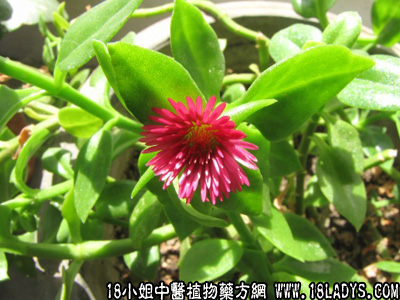

(本文解释权归中药材天地网兄弟站-18小姐中医植物药方网所有,如需转载请注明出处)

别名：榄核莲、斩蛇莲（新会）、一见喜（福建）、蛇金草、印度草（汕头）、半边莲（蛇王满）、日行千里（省外）、竹节芡《生草药手册》）
分布：福建、广东新会。
采集期：秋、冬。
入药部分：全草。
性味：气无、味苦、性凉。
功能：用于蛇咬、肚疴、肠热及发高热、降血压、清热止痛、能解蛇毒、治疮疖、喉痛、腹痛。
主治、用量和用法：毒蛇咬伤、喉痛、腹痛、外敷热疮，一切尖热炎症，每用1至5钱。
（本品为榄核莲的全草）
(本文解释权归中药材天地网兄弟站-18小姐中医植物药方网所有,如需转载请注明出处)